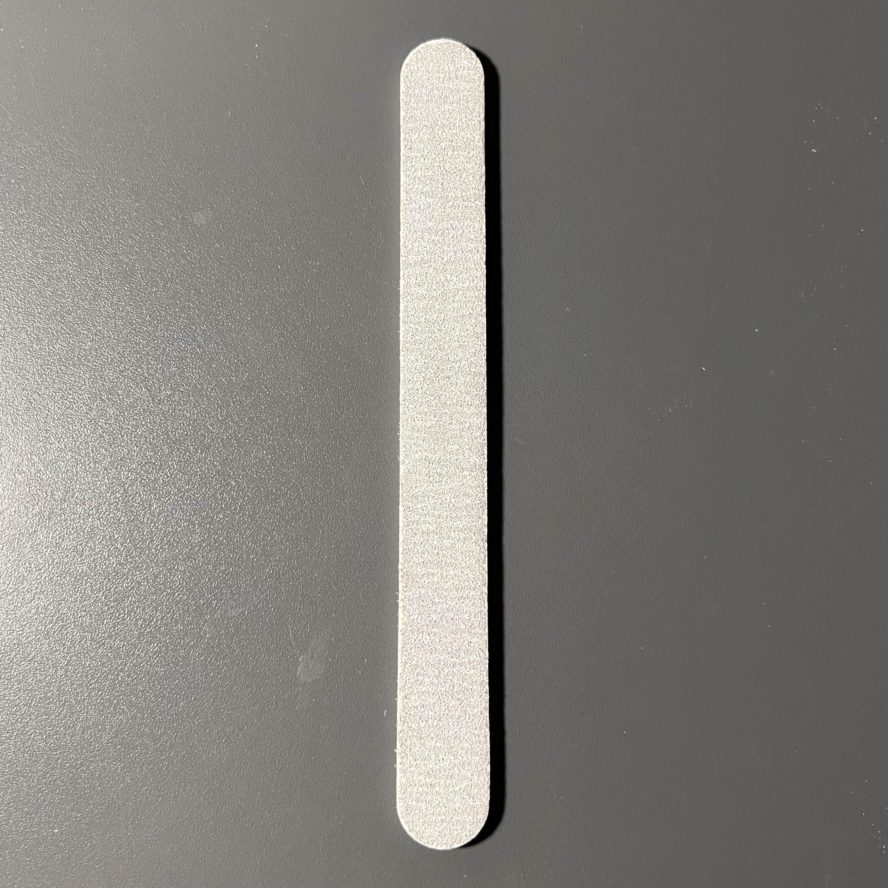

네일 영양제
맨손톱에 직접적으로 발라 젤네일로 상처난 손톱을 회복시키는 영양제
큐티클 펜 리무버
젤네일의 지속력을 떨어뜨리는 큐티클을 보다 쉽게 제거할 수 있도록 큐티클 제거 용액이 묻어있는 펜

네일 파일
울퉁불퉁한 손톱 표면 및 손톱의 모양을 갈아서 매끈하게 정리
큐티클 니퍼
큐티클 펜 리무버로 완전히 정리되지 않은 큐티클을 깔끔히 절단
맨손톱에 직접적으로 발라 젤네일로 상처난 손톱을 회복시키는 영양제
젤네일의 지속력을 떨어뜨리는 큐티클을 보다 쉽게 제거할 수 있도록 큐티클 제거 용액이 묻어있는 펜
울퉁불퉁한 손톱 표면 및 손톱의 모양을 갈아서 매끈하게 정리
큐티클 펜 리무버로 완전히 정리되지 않은 큐티클을 깔끔히 절단